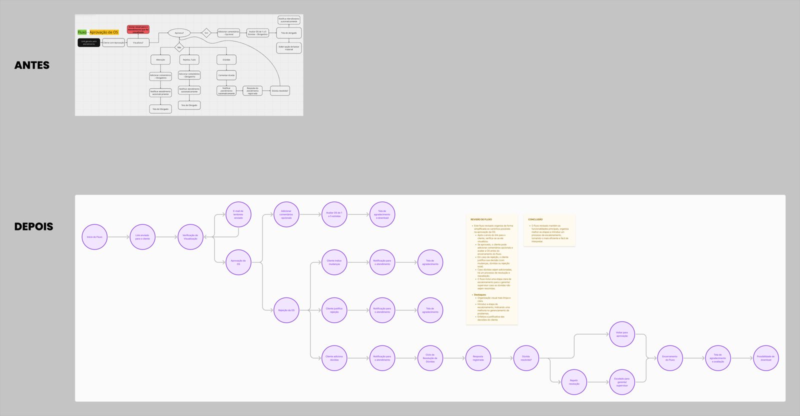
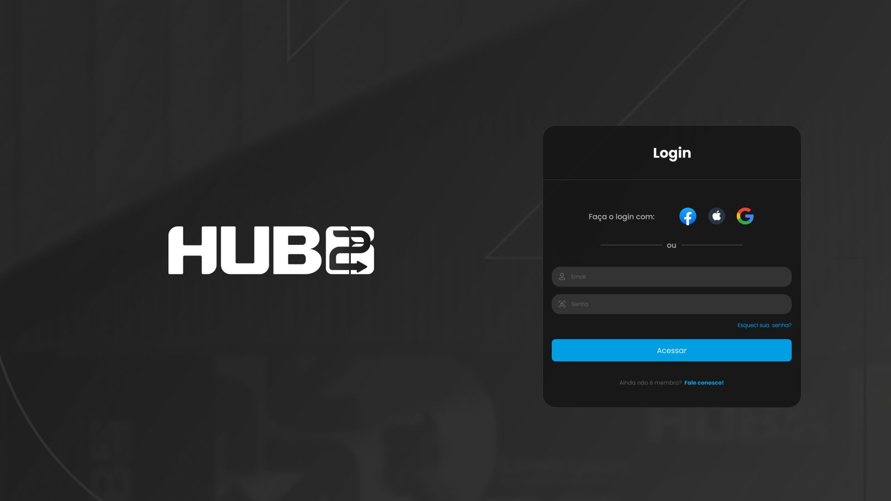
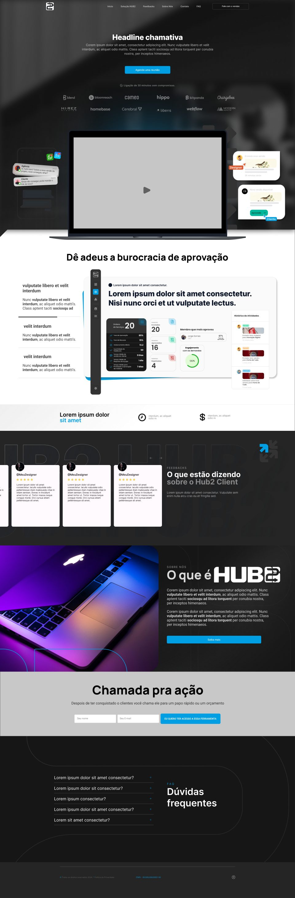

Por que existe
Na Dilis, os pedidos dos clientes chegavam por WhatsApp, direct e e-mail. Não havia controle de versão, os designers recebiam feedback vago e as aprovações também eram vagas. O Trello existia, mas não dava conta de registrar as demandas e trazer feedback rápido dos clientes.
O HUB2 nasceu como produto da própria Dilis, para ser oferecido como serviço aos clientes da agência. Cada pedido vira uma ordem de serviço com versões, comentários e aprovação registrados.
Fiquei com o desenho e a validação visual de todo o fluxo de criação de demandas, além da identidade visual. O design foi todo meu. No time estavam também dois programadores, um gestor de projetos e o CEO da Dilis.
A tela de que mais gosto
Trabalhei muitos anos como designer gráfico, e receber um feedback que desse para usar sempre foi o problema. Na ordem de serviço, o cliente comenta ao lado da peça, a versão fica numerada e dá para comparar uma versão com a outra. O comentário fica preso ao arquivo certo, em vez de se perder numa conversa.

Fluxo
O caminho de uma demanda, do pedido até a aprovação, com o que cada perfil pode fazer em cada etapa. O cliente aprova três tipos de coisa: orçamento, material e plano de mídia.

Dashboard
Ordens abertas, taxa de aprovação, número médio de versões por peça, tempo de resposta da equipe e satisfação dos clientes (CSI). A taxa de aprovação aparece também por designer.

A revisão
A primeira versão tinha muitos tipos de usuário, cada um com várias funções. Quando o fluxo de criação de demandas mudou e entraram features novas, simplifiquei para três perfis base: Adm, Atendimento e Cliente. Os modais e o fluxo de aprovação foram refeitos junto.



Landing beta
A primeira landing de vendas do HUB2. Comecei por um roteiro de seções: o problema antes do produto (muito e-mail, aprovação manual pelo WhatsApp, mensagem que perde a referência), como a solução funciona, benefícios, depoimentos e contato. A orientação era "simples assim", em preto e branco com o azul usado só em pontos específicos.
O layout está fechado, mas os textos ainda são de preenchimento e a faixa de logos usa marcas de referência, não clientes.

Onde está hoje
O HUB2 está em validação. O time de desenvolvimento da Dilis segue testando e alguns clientes já usam o sistema em teste. Ainda não há números de tempo de aprovação ou de retrabalho.